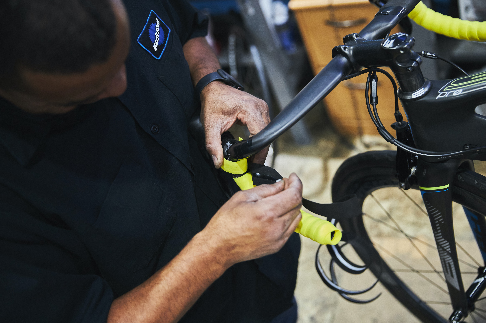

- You will need the following tools to clean your road bike:
- A brush (do not use hard bristles or steel wool)
- Soapy water (water and bike shampoo)
- Sponge
- Degreaser (can be used on metal parts like cogs, chainrings or pedals.)
- Hose (make sure it's long enough)
- Rubber gloves (to protect your hands from dirt and grit)
- Bucket or large container for water
- Tire Conditioner
- Bike Wax
- Microfiber Cloth

- Steps in Cleaning Road Bike
- Step 1: Spray water to the bike to prewash the bike to remove much of the dirt and mud as possible. Use a brush for stubborn dirt like the dirt in the tires
- Step 2: Spray Bike degreaser to the cogs, rims, derailleur, chain ring and even chain
- Step 3: Brush the rims, derailleur, chainring and chain. You could use toothbrush for hard to reach areas
- Step 4: Rinse the bike and let the dirt drip from the bike
- Step 5: Using a bucket fill it up and put some bike shampoo and foam it up
- Step 6: Using Sponge and bike shampoo mixture clean the bike from wheels, cockpit, frame and other parts of the bike
- Step 7: Rinse again the bicycle and let it dry
- Step 8: Next is bike detailing with microfiber cloth and bike wax detail the frame to protect and shine it
- Step 9: Lastly put some tire conditioner to the tires
- How to Patch a Tire
- Step 1: Pop out the tire, most common road bike tires are either thru axle. So you will need an allen wrench to remove the tires out of the bike
- Step 2: Open the tire valve and let the remaining air out of the tire
- Step 3: Wedge two or three tire levers under the edge of the tires, until it pops out of the wheel rim, but you could also use your hands, but you need a powerful hands to do so
- Step 4: Take out the inner tube, being sure to lift the tube over the valve also this is the great time to find any debris or sharp objects that could pierce through your tires
- Step 5: Using a Patch Kit, patch the hole and firmly press the patch
- Step 6: Stick the tire edge to the bike rim, and use a bike pump to inflate the bike rim
- Step 7: Put back the tire valve and bring the tires back to your bike
- Side Note: Some tire patch are only a temporary fix to your punctured interior tube. It is always best to replace the punctured inner tube
- How to Install and Secure Drop Handlebar Tape
- Step 1: Remove the old handlebar tape
- Step 2: Start at the end and make room 1/3 inch and roll evenly up to the handlebar
- Step 3: Put the black tape around to secure the bar tape and screw the buttons at the tip of handlebar
- Side Note: To secure firmly the handlebar tape slighty stretch to secure it in the handlebar

- How to Lube a Chain
- Step 1: It is best to lube a chain after bike washing, you can also use a bike chain cleaner to clean your chain
- Step 2: There is two types of lube, Dry Lube and Wet Lube. A Dry Lube can be used in dry weathers while a Wet Lube can be used in wet season
- Step 3: After picking a right lube for the weather, Drop some lube into the chain links by chain links
- Step 4: Next let it dry for a few minutes and wipe the excess lube
- Adjusting Rim Brakes and Brake Pads
- Step 1: Most common type of breaks in mtb are Rim Brakes, where it stops the wheel rims as its braking power
- Step 2: Release the rim brake from the brake rims, Loosen Up the brake line
- Step 3: Reinsert the brake line and ensure its tight in the rim brakes
- Step 4: Tighten the brake line to the rim brakes
- Step 5: Check the braking and if the rim brakes are aligned to the rims
- Step 6: Now check the brake pads if still thick and doesn't limit the braking power